임상심리사-2급 (2021-08-14 기출문제)
1과목: 심리학개론
1. 기질과 애착에 관한 설명으로 틀린 것은?
- 불안정-회피애착 아동은 주양육자에게 과도한 집착을 보인다.
- 내적작동모델은 아동의 대인관계에 대한 지표 역할을 한다.
- 기질은 행동 또는 반응의 개인차를 설명해 주는 생물학적 기초를 가지고 있다.
- 주양육자가 아동의 기질을 고려하여 적절하게 양육한다면 아동의 까다로운 기질이 반드시 불안정애착으로 이어지는 것은 아니다.
(정답률: 84%)

2. 다음 중 온도나 지능검사의 점수를 측정할 때 사용되는 척도는?
- 명목척도
- 서열척도
- 등간척도
- 비율척도
(정답률: 72%)
3. 기억의 인출과정에 대한 설명으로 틀린 것은?
- 인출이 이후의 기억을 증가시킬 수 있다.
- 장기기억에서 한 항목을 인출한 것이 이후에 관련된 항목의 회상을 방해할 수 있다.
- 인출행위가 경험에서 기억하는 것을 변화시킬 수 있다.
- 기분과 내적 상태는 인출단서가 될 수 없다.
(정답률: 84%)
4. 인상형성에 관한 설명으로 틀린 것은?
- 인상형성 시 정보처리를 할 때 최소의 노력으로 빨리 처리하려고 하기 때문에 많은 오류나 편향을 나타내는데, 이러한 현상에서 인간을'인지적 구두쇠'라고 보는 입장도 있다.
- 내현성격이론은 사람들이 인상형성을 할 때 타인과 관련된 다양한 정보를 통합적이고 객관적으로 평가하는 것을 말한다.
- Anderson은 인상형성과 관련하여 가중평균모형을 주장했다.
- 인상형성 시 긍정적인 정보보다 부정적인 정보가 더 큰 영향을 미치는데, 이를 부정성효과라고 한다.
(정답률: 77%)
5. Freud가 설명한 인간의 3가지 성격 요소 중 현실 원리를 따르는 것은?
- 원초아
- 자아
- 초자아
- 무의식
(정답률: 89%)
6. 성격의 결정요인에 관한 설명으로 틀린 것은?
- 유전적 영향에 대한 증거는 쌍생아 연구에 근거하고 있다.
- 초기 성격이론가들은 환경적 요인을 강조하여 체형과 기질을 토대로 성격을 분류하였다.
- 환경적 요인이 성격에 영향을 주는 방식은 학습이론의 맥락에서 이해할 수 있다.
- 성격은 유전적 요인과 환경적 요인의 상호작용에 의하여 결정된다.
(정답률: 77%)
7. 훈련받은 행동이 빨리 습득되고 높은 비율로 오래 유지되는 강화계획은?
- 고정비율계획
- 고정간격계획
- 변화비율계획
- 변화간격계획
(정답률: 77%)
8. 조사연구에서, 참가자의 인지기능을 측정하기 위해 그가 가입한 정당을 묻는 것은 어떤 점에서 가장 문제가 되는가?
- 안면타당도
- 외적타당도
- 공인타당도
- 예언타당도
(정답률: 62%)
9. 단기기억의 특징이 아닌 것은?
- 용량이 제한되어 있다.
- 절차기억이 저장되어 있다.
- 정보를 유지하는 시간이 제한되어 있다.
- 망각의 일차적 원인은 간섭이다.
(정답률: 75%)
10. 현상학적 이론에 대한 설명으로 틀린 것은?
- 인간을 성취를 추구하는 존재로 파악한다.
- 인간을 자신의 환경에 굴복하지 않고 오히려 환경을 통제하고 조정할 수 있는 적극적인 힘을 갖고 있는 존재로 파악한다.
- 현재 개인이 경험하고, 느끼고, 행동하는 것이 중요하며, 개인의 진정한 모습을 이해하는 것도 이를 통해 가능하다고 본다.
- 인간은 타고난 욕구에 끌려 다니는 존재로 간주한다.
(정답률: 77%)
11. 자신과 타인의 휴대폰 소리를 구별하거나 식용버섯과 독버섯을 구별하는 것은?
- 변 별
- 일반화
- 행동조형
- 차별화
(정답률: 88%)
12. 표본의 크기에 관한 설명으로 틀린 것은?
- 모집단이 동질적일수록 표본 크기는 작아도 된다.
- 동일한 조건에서 표본의 크기가 클수록 통계적 검증력은 증가한다.
- 사례수가 작으면 표준오차가 커지므로 작은 크기의 효과를 탐지할 수 있다.
- 측정도구의 신뢰도가 낮을 경우 대규모 표본을 이용하는 것이 효과적이다.
(정답률: 62%)
13. 발달의 일반적 특징으로 틀린 것은?
- 발달은 이전 경험의 누적에 따른 산물이다.
- 한 개인의 발달은 역사·문화적 맥락의 영향을 받는다.
- 발달의 각 영역은 상호의존적이기보다는 서로 배타적이다.
- 대부분의 발달적 변화는 성숙과 학습의 산물이다.
(정답률: 83%)
14. 고전적 조건형성에 대한 설명으로 맞는 것은?
- 중립자극은 무조건 자극 직후에 제시되어야 한다.
- 행동변화의 효과를 거두기 위해서는 적절한 반응의 수나 비율에 따라 강화가 이루어져야 한다.
- 적절한 행동은 즉시 강화하고, 부적절한 행동은 무시함으로써 새로운 행동을 가르칠 수 있다.
- 대부분의 정서적인 반응들은 고전적 조건형성을 통해 학습될 수 있다.
(정답률: 45%)
15. 정신분석의 방어기제 중 투사에 해당하는 것은?
- 아주 위협적이고 고통스러운 충동이나 기억을 의식에서 추방시키는 것
- 반대되는 동기를 강하게 표현함으로써 자신의 동기를 숨기는 것
- 자신이 가진 바람직하지 않은 자질들을 과장하여 다른 사람에게 부여하는 것
- 불쾌한 현실이 있음을 부정하는 것
(정답률: 86%)
16. 다음과 같은 연구의 종류는?
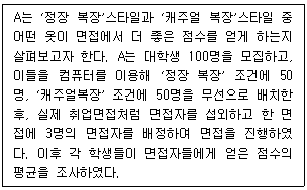
- 사례연구
- 상관연구
- 실험연구
- 혼합연구
(정답률: 80%)
17. 성격심리학의 주요한 모델인 성격 5요인에 대한 설명으로 옳은 것은?
- 5요인에 대한 개인차에서 유전적 요인은 찾아볼 수 없다.
- 성실성 점수가 높은 사람의 경우 행동을 계획하고 통제하는 것을 돕는 전두엽의 면적이 더 큰 경향이 있다.
- 뇌의 연결성은 5요인의 특질에 영향을 미치지 않는다.
- 정서적 불안정성인 신경증은 일생동안 계속해서 증가하고 성실성, 우호성, 개방성과 외향성은 감소한다.
(정답률: 75%)
18. 대뇌의 우반구가 손상되었을 때 주로 영향을 받게 될 능력은?
- 통장잔고 점검
- 말하기
- 얼굴 재인
- 논리적 문제해결
(정답률: 75%)
19. 비행기 여행에 두려움을 가지고 있는 환자의 경우, 정신분석적 입장에서 볼 때 이 두려움의 주된 원인으로 가정할 수 있는 것은?
- 두려운 느낌을 갖게 만드는 무의식적 갈등의 전이
- 어린 시절 사랑하는 부모에게 닥친 비행기 사고의 경험
- 비행기의 추락 등 비행기 관련 요소들의 통제 불가능성
- 자율신경계 등 생리적 활동의 이상
(정답률: 78%)
20. 귀인이론에 관한 설명으로 틀린 것은?
- 성공 상황에서 노력 요인으로 귀인할 경우 학습 행동을 동기화할 수 있다.
- 귀인 성향은 과거 성공, 실패 상황에서의 반복적인 원인 탐색 경험에 의해 형성된다.
- 귀인의 결과에 따라 자부심, 죄책감, 수치심 등의 정서가 유발되기도 한다.
- 능력 귀인은 내적, 안정적, 통제 가능한 귀인 유형으로 분류된다.
(정답률: 71%)
2과목: 이상심리학
21. 반사회성 인격장애의 진단기준이 아닌 것은?
- 반사회적 행동은 조현병이나 양극성장애의 경과 중에만 발생되지는 않는다.
- 10세 이전에 품행장애의 증거가 있어야 한다.
- 사회적 규범을 지키지 못한다.
- 충동성과 무계획성을 보인다.
(정답률: 61%)
22. 이상행동 및 정신장애의 판별기준과 가장 거리가 먼 것은?
- 적응적 기능의 저하 및 손상
- 주관적 불편감과 개인의 고통
- 가족의 불편감과 고통
- 통계적 규준의 일탈
(정답률: 72%)
23. 알츠하이머병으로 인한 신경인지장애와 주요우울장애의 증상 구분에 관한 설명으로 옳은 것은?
- 알츠하이머병으로 인한 신경인지장애는 기억 손실을 감추려는 시도를 하는 데 반해 주요우울장애에서는 기억 손실을 불평한다.
- 알츠하이머병으로 인한 신경인지장애는 자기의 무능이나 손상을 과장하는 데 반해 주요우울장애에서는 숨기려 한다.
- 주요우울장애보다 알츠하이머병으로 인한 신경인지장애에서 알코올 등의 약물남용이 많다.
- 주요우울장애에서는 증상의 진행이 고른 데 반해 알츠하이머병으로 인한 신경인지장애에서는 몇 주 안에도 진행이 고르지 못하다.
(정답률: 55%)
24. 회피성성격장애에서 나타나는 대인관계 특징은?
- 자신의 목적을 달성하기 위해서 타인을 이용한다.
- 타인에게 과도하게 매달리고 복종적인 경향을 띤다.
- 친밀한 관계를 바라지도 않으며 타인의 칭찬이나 비판에 무관심해 보인다.
- 비판이나 거절, 인정받지 못함 등에 대한 두려움이 특징적이다.
(정답률: 57%)
25. 다음 중 치매의 원인에 따른 유형으로 볼 수 없는 것은?
- 알츠하이머 질환
- 혈관성 질환
- 파킨슨 질환
- 페닐케톤뇨증
(정답률: 67%)
26. 우울장애에 대한 설명으로 옳지 않은 것은?
- 주요우울장애의 발병은 20대에 최고치를 보인다.
- 주요우울장애의 유병률은 남자보다 여자에게서 더 높다.
- 노르에피네프린이나 세로토닌 같은 신경전달물질이 우울장애와 관련된다.
- 적어도 1년 동안 심하지 않은 우울을 지속적으로 경험할 때 지속성우울장애로 진단한다.
(정답률: 60%)
27. 양극성장애에 대한 설명으로 틀린 것은?
- 조증 상태에서는 사고의 비약 등의 사고장애가 나타난다.
- 우울증 상태에서는 자살을 시도하기도 한다.
- 조증은 서서히, 우울증은 급격히 나타난다.
- 조증과 우울증이 반복되는 장애이다.
(정답률: 69%)
28. 사람이 스트레스 장면에 처하게 되면 일차적으로 불안해지고 그 장면을 통제할 수 없게 되면 우울해진다고 할 때 이를 설명하는 이론은?
- 학습된 무기력 이론
- 실존주의 이론
- 사회문화적 이론
- 정신분석 이론
(정답률: 68%)
29. 알코올사용장애에 관한 설명으로 틀린 것은?
- 금단 증상은 과도하게 장기간 음주하던 것을 줄이거나 양을 줄인지 4~12시간 정도 후 나타나는 것이 특징이다.
- 장기간의 알코올 사용에 따르는 비타민 B의 결핍은 극심한 혼란, 작화반응 등을 특징으로 하는 헌팅턴병을 유발할 수 있다.
- 알코올은 중추신경계에서 다양한 뉴런과 결합하여 개인을 진정시키는 효과를 가져온다.
- 아시아인들은 알코올을 분해하는 탈수소효소가 부족하여 알코올 섭취시 부정적인 반응이 쉽게 나타난다.
(정답률: 48%)
30. 신체증상 및 관련 장애에 관한 설명으로 틀린 것은?
- 전환장애는 스트레스 요인이 동반되지 않는 경우도 있다.
- 신체증상장애는 일상에 중대한 지장을 일으키는 신체증상이 존재한다.
- 질병불안장애는 심각한 질병에 걸렸다는 집착이 6개월 이상 지속된다.
- 허위성장애는 외적 보상이 쉽게 확인된다
(정답률: 40%)
31. DSM-5의 조현병 진단기준에 해당하지 않는 것은?
- 망상이나 환각 등의 특징적 증상들이 2개 이상 1개월의 기간 동안 상당 시간에 존재한다.
- 직업, 대인관계 등 주요한 생활영역에서의 기능수준이 발병 전에 비해 현저하게 저하된다.
- 장애의 지속적 징후가 적어도 3개월 이상 계속된다.
- 장애가 물질의 생리적 효과나 다른 의학적 상태로 인한 것이 아니다.
(정답률: 48%)
32. 성도착장애에 관한 설명으로 틀린 것은?
- 물품음란장애는 여성보다 남성에게서 훨씬 더 많이 나타난다.
- 동성애를 하위 진단으로 포함한다.
- 복장도착장애는 강렬한 성적 흥분을 위해 이성의 옷을 입는 것이다.
- 관음장애는 대부분 15세 이전에 발견되며 지속되는 편이다.
(정답률: 72%)
33. 조현병의 양성증상에 포함되지 않는 것은?
- 망상
- 환각
- 와해된 언어
- 둔화된 정서
(정답률: 70%)
34. 이상행동의 원인을 다음과 같이 설명하는 이론은?
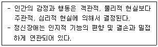
- 정신분석 이론
- 행동주의 이론
- 인지적 이론
- 인본주의 이론
(정답률: 68%)
35. 다음 사례에 가장 적절한 진단명은?
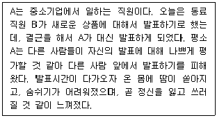
- 범불안장애
- 공황장애
- 강박장애
- 사회불안장애
(정답률: 63%)
36. 품행장애에 대한 설명으로 틀린 것은?
- 발병연령은 일반적으로 7~15세이며, 이 진단을 받은 아동 중 3/4은 소년이다.
- 주요한 사회적 규범을 위반하고 다른 사람들의 기본적인 권리를 종종 침해한다.
- 사람이나 동물에 대한 공격적 행동, 절도나 심각한 거짓말 등이 전형적인 행동이다.
- 청소년기 발병형은 아동기 발병형에 비해 성인기까지 지속되는 경향이 있다.
(정답률: 53%)
37. 물질 관련 장애에 포함되지 않는 것은?
- 알코올 중독(Intoxication)
- 대마계(칸나비스) 사용장애(Use Disorder)
- 담배 중독(Intoxication)
- 아편계 금단(Withdrawal)
(정답률: 51%)
38. 지적 장애에 관한 설명으로 옳지 않은 것은?
- 지적 장애 중 가장 많은 비율을 차지하는 것은 경도의 지적 장애이다.
- 지적 장애를 일으키는 염색체 이상 중 가장 일반적인 것은 다운증후군에 의한 것이다.
- 최고도의 지적 장애인 경우, 훈련을 해도 걷기, 약간의 말하기, 스스로 먹기 같은 기초기술을 배우거나 나아질 수 없다.
- 경도의 지적 장애를 가진 아동의 경우, 자기관리는 연령에 적합하게 수행할 수 있다.
(정답률: 54%)
39. 배설장애 중 유뇨증에 관한 설명으로 틀린 것은?
- 반복적으로 불수의적으로 잠자리나 옷에 소변을 본다.
- 유병률은 5세에서 5~10%, 10세에서 3~5%이며, 15세 이상에서는 약 1% 정도이다.
- 야간 유뇨증은 여성에서 더 흔하다.
- 야간 유뇨증은 종종 REM 수면 단계 동안 일어난다.
(정답률: 59%)
40. 광장공포증에 관한 설명으로 가장 적합한 것은?
- 광장공포증의 남녀 간 발병비율은 비슷한 수준이다.
- 아동기에 발병률이 가장 높다.
- 광장공포증이 있으면 공황장애는 진단할 수 없다.
- 공포, 불안, 회피 반응은 전형적으로 6개월 이상 지속된다.
(정답률: 55%)
3과목: 심리검사
41. 집-나무-사람(HTP) 검사에 관한 설명으로 맞는 것은?
- 집, 나무, 사람의 순서대로 그리도록 한다.
- 각 그림마다 시간제한을 두어야 한다.
- 문맹자에게는 실시할 수 없다.
- 머레이(H. Murray) 가 개발하였다.
(정답률: 59%)
42. 다음 환자는 뇌의 어떤 부위가 손상되었을 가능성이 높은가?
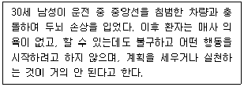
- 측두엽
- 후두엽
- 전두엽
- 두정엽
(정답률: 67%)
43. 지능의 개념에 관한 연구자와 주장의 연결이 틀린 것은?
- Wechsler : 지능은 성격과 분리될 수 없다.
- Horn : 지능은 독립적인 7개 요인으로 이루어져 있다.
- Cattell : 지능은 유동적 지능과 결정화된 지능으로 구분할 수 있다.
- Spearman : 지적 능력에는 g요인과 s요인이 존재한다.
(정답률: 57%)
44. 선로잇기검사(Trail Making Test)는 대표적으로 어떤 기능 또는 능력을 측정하기 위해 고안된 검사인가?
- 주의력
- 기억력
- 언어능력
- 시공간 처리능력
(정답률: 57%)
45. 로샤(Rorschach) 검사의 엑스너(J. Exner) 종합체계에서 유채색 반응이 아닌 것은?
- C'
- CF
- FC
- Cn
(정답률: 43%)
46. WAIS-IV의 소검사 중 언어이해 지수 척도의 보충 소검사에 해당되는 것은?
- 공통성
- 상식
- 어휘
- 이해
(정답률: 49%)
47. 심리검사의 윤리에 관한 설명으로 틀린 것은?
- 자격을 갖춘 사람이 심리검사를 실시해야 한다.
- 검사동의를 구할 때에는 비밀유지의 한계에 대해 알려야 한다.
- 동의할 능력이 없는 사람에게도 평가의 본질과 목적을 알려야 한다.
- 자동화된 서비스를 사용할 경우 검사자는 평가의 해석에 대한 책임을 지지 않는다.
(정답률: 65%)
48. 지능에 대한 설명으로 틀린 것은?
- 아동기의 전반적인 인지발달은 청소년기보다 그 속도가 느리다.
- 발달규준에서는 수검자의 생활연령과 정신연령을 함께 표기한다.
- 편차 IQ는 집단 내 규준에 속한다.
- 추적규준은 연령별로 동일한 백분위를 갖는다고 가정한다.
(정답률: 62%)
49. 카우프만 아동용지능검사(K-ABC)에 관한 설명으로 틀린 것은?
- 정보처리적인 이론적 관점에서 제작되었다.
- 성취도를 평가할 수도 있다.
- 언어적 기술에 덜 의존하므로 언어능력의 문제가 있는 아동에게 적합하다.
- 아동용 웩슬러지능검사(WISC)와 동일한 연령대의 아동을 대상으로 한다.
(정답률: 43%)
50. MMPI 제작 방식에 관한 설명으로 옳은 것은?
- 정신병리 이론을 바탕으로 하여 제작되었다.
- 합리적·이론적 방식을 결합하여 제작되었다.
- 정신장애군과 정상군을 변별하는 통계적 결과에 따라 경험적 방식으로 제작되었다.
- 인성과 정신병리와의 상관성에 대한 선행연구 결과들을 바탕으로 하여 제작되었다.
(정답률: 50%)
51. 표준점수에 관한 설명으로 틀린 것은?
- 대표적인 표준점수로는 Z점수가 있다.
- 표준점수는 원점수를 직선변환하여 얻는다.
- 웩슬러지능검사의 IQ 수치도 일종의 표준점수이다.
- Z점수가 0이라는 것은, 그 사례가 해당 집단의 평균치보다 1 표준편차 위에 있다는 것을 의미한다.
(정답률: 56%)
52. 노년기 인지발달에 관한 설명으로 옳은 것은?
- 정보처리 속도가 크게 증가한다.
- 결정지능의 감퇴가 유동지능보다 현저해진다.
- 인지발달의 변화양상에서 개인차가 더 커지게 된다.
- 의미기억이 일화기억보다 더 많이 쇠퇴한다.
(정답률: 46%)
53. 성격검사에 관한 설명으로 틀린 것은?
- MMPI는 만15세 수검자에게 실시 가능하다.
- CAT은 모호한 검사자극을 통해 개인의 의식 영역 밖의 정신현상을 측정하기 위한 성격검사이다.
- 16 성격요인검사는 케텔(R. Cattell)의 성격특성 이론을 근거로 개발되었다.
- 애니어그램은 인간의 성격유형을 8개로 설명한다.
(정답률: 43%)
54. 다음에서 설명하는 검사는?
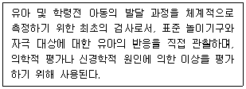
- Gesell의 발달 검사
- Bayley의 영아발달 척도
- 시·지각 발달 검사
- 사회성숙도 검사
(정답률: 42%)
55. MMPI-2의 타당도 척도 중 비전형성을 측정하는 척도에서 증상타당성을 의미하는 것은?
- TRIN
- FBS
- F(P)
- F
(정답률: 47%)
56. 심리검사 선정기준으로 틀린 것은?
- 신뢰도와 타당도가 높은 검사를 선정한다.
- 검사의 경제성과 실용성을 고려해 선정한다.
- 수검자의 특성과 상관없이 의뢰 목적에 맞춰 선정한다.
- 객관적 검사와 투사적 검사의 장·단점을 고려하여 선정한다.
(정답률: 66%)
57. 신경심리평가 중 주의력 및 정신적 추적능력을 평가할 수 있는 검사가 아닌 것은?
- Wechsler 지능검사의 기호쓰기 소검사
- Wechsler 지능검사의 숫자 소검사
- Trail Making Test
- Wisconsin Card Sorting Test
(정답률: 48%)
58. 투사적 검사에 관한 설명으로 옳은 것은?
- 벤더게슈탈트검사에서 성인이 그린 도형 A의 정상적인 위치는 용지의 정 중앙이다.
- 동작성 가족화 검사는 가족의 정서적인 관계를 살펴보는 데 유용하다.
- 아동용 주제통각검사의 카드 수는 주제통각검사와 동일하다.
- 주제통각검사 카드는 성인 남성과 성인 여성으로만 구별된다
(정답률: 56%)
59. 아동의 지적 발달이 또래 집단에 비해 지체되어 있는지, 혹은 앞서고 있는지를 평가하기 위해 Stern이 사용한 IQ 산출계산방식은?
- 지능지수(IQ) = [정신연령/신체연령] × 100
- 지능지수(IQ) = [정신연령/신체연령] + 100
- 지능지수(IQ) = [신체연령/정신연령] × 100
- 지능지수(IQ) = [신체연령/정신연령] ÷ 100
(정답률: 59%)
60. 뇌손상 환자의 병전지능 수준을 추정하기 위한 자료와 가장 거리가 먼 것은?
- 교육수준, 연령과 같은 인구학적 자료
- 이전의 직업기능 수준 및 학업 성취도
- 이전의 암기력 수준, 혹은 웩슬러 지능검사에서 기억능력을 평가하는 소검사 점수
- 웩슬러 지능검사에서 상황적 요인에 의해 잘 변화하지 않는 소검사 점수
(정답률: 39%)
4과목: 임상심리학
61. 행동평가와 전통적 심리평가 간의 차이점으로 틀린 것은?
- 행동평가에서 성격의 구성 개념은 주로 특정한 행동패턴을 요약하기 위해 사용된다.
- 행동평가는 추론의 수준이 높다.
- 전통적 심리평가는 예후를 알고, 예측하기 위한 것이다.
- 전통적 심리평가는 개인 간이나 보편적 법칙을 강조한다.
(정답률: 42%)
62. 우리나라 임상심리학자의 고유 역할에 해당되지 않는 것은?
- 연구
- 자문
- 약물치료
- 교육
(정답률: 63%)
63. 행동평가의 목적에 해당하지 않는 것은?
- 처치를 수정하기
- 진단명을 탐색하기
- 적절한 처치를 선별하기
- 문제행동과 그것을 유지하는 조건을 확인하기
(정답률: 49%)
64. 셀리에(Selye)의 일반적응증후군의 단계로 옳은 것은?
- 경고 → 소진 → 저항
- 경고 → 저항 → 소진
- 저항 → 경고 → 소진
- 소진 → 저항 → 경고
(정답률: 61%)
65. HTP 검사해석으로 옳은 것은?
- 필압이 강한 사람은 약한 사람에 비해 억제된 성격일 가능성이 높다.
- 지우개를 과도하게 많이 사용한 사람은 대부분 자신감이 높다.
- 집 그림 중에서 창과 창문은 내적 공상활동에 대한 정보를 제공하는 중요한 지표이다.
- 나무의 가지와 사람의 팔은 대인관계에 대한 욕구를 탐색할 수 있는 정보를 제공한다.
(정답률: 49%)
66. 다음 중 접수면접의 주요 목적과 가장 거리가 먼 것은?
- 환자를 병원이나 진료소에 의뢰할지를 고려한다.
- 제공되는 서비스에 대한 환자의 질문에 대답한다.
- 환자에게 신뢰, 래포 및 희망을 심어주려고 시도한다.
- 환자가 자신이나 다른 사람을 해칠 중대한 위험상태에 있는지 결정한다.
(정답률: 36%)
67. 체계적 둔감법에 대한 설명으로 틀린 것은?
- 고전적 조건형성 원리에 기초한 행동치료 기법이다.
- 특정한 대상에 불안을 느끼는 경우에 효과적이다.
- 이완훈련, 불안위계 목록 작성, 둔감화로 구성된다.
- 심상적 홍수법과는 달리 불안 유발 심상에 노출되지 않는다.
(정답률: 59%)
68. 현실치료에 관한 설명으로 틀린 것은?
- 내담자가 실행하지 못한 것에 대한 변명을 허용하지 않는다.
- 전행동(Total Behavior)의'생각하기'에는 공상과 꿈이 포함된다.
- 개인은 현실에 대한 지각을 통해 현실 그 자체를 알 수 있다.
- 내담자 개인의 책임을 강조한다.
(정답률: 23%)
69. 단기 심리치료에서 좋은 결과를 이끌어 내기 위한 요인이 아닌 것은?
- 치료자의 온정과 공감
- 견고한 치료적 동맹 관계
- 문제에 대한 회피
- 내담자의 적절한 긍정적 기대
(정답률: 63%)
70. 두뇌기능의 국재화에 관한 설명으로 옳은 것은?
- 특정 인지능력은 국부적인 뇌 손상에 수반되는 한정된 범위의 인지적 결함으로부터 발생한다고 본다.
- Broca 영역은 좌반구 측두엽 손상으로 수용적 언어 결함과 관련된다.
- Wernicke 영역은 좌반구 전두엽 손상으로 표현 언어 결함과 관련된다.
- MRI 및 CT가 개발되었으나 기능 문제 확인에는 외과적 검사가 이용된다.
(정답률: 43%)
71. 임상심리학자로서의 책임과 능력에 있어서 바람직하지 못한 것은?
- 서비스를 제공할 때 높은 기준을 유지한다.
- 자신의 활동결과에 대해 책임을 진다.
- 자신의 능력과 기술의 한계를 알고 있어야 한다.
- 자신만의 경험을 기준으로 내담자를 대한다.
(정답률: 62%)
72. 방어기제에 대한 개념과 설명이 옳게 연결된 것은?
- 투사(Projection) : 당면한 상황에서 얻게 된 결과에 대해 어쩔 수 없었다고 생각하며 행동한다.
- 대치(Displacement) : 추동대상을 위협적이지 않거나 이용 가능한 대상으로 바꾼다.
- 반동형성(Reaction Formation) : 이전의 만족방식이나 이전 단계의 만족대상으로 후퇴한다.
- 퇴행(Regression) : 무의식적 추동과는 정반대로 표현한다.
(정답률: 61%)
73. 다음 중 관계를 중심으로 치료가 초점화되고 있는 정신역동적 접근방법의 단기치료가 아닌 것은?
- 핵심적 갈등관계 주제(Core Conflictual Relationship Theme)
- 불안유발 단기치료(Anxiety Provoking Brief Therapy)
- 기능적 분석(Functional Analysis)
- 분리개별화(Separation And Individuation
(정답률: 44%)
74. 잠재적인 학습문제의 확인, 학습실패 위험에 처한 아동에 대한 프로그램 운용, 학교 구성원들에게 다양한 관점 제공, 부모 및 교사에게 특정 문제행동에 대한 대처기술을 제공하는 학교심리학자의 역할은?
- 예방
- 교육
- 부모 및 교사훈련
- 자문
(정답률: 31%)
75. 임상심리학자로서 지켜야 할 내담자에 대한 비밀보장에 관한 설명으로 틀린 것은?
- 일반적으로 상담과정에서 내담자에 대해 알게 된 사실을 다른 사람들에게 말하면 안 된다.
- 아동 내담자의 경우에도 아동에 관한 정보를 부모에게 알려서는 안 된다.
- 자살 우려가 있는 경우 내담자의 비밀을 지키는 것보다는 가족에게 알려 자살예방조치를 취하는 것이 더 중요하다.
- 상담 도중 알게 된 내담자의 중요한 범죄사실에 대해서는 비밀을 지킬 필요가 없다.
(정답률: 50%)
76. 행동치료를 위해 현재문제에 대한 기능분석을 하면 규명할 수 있는 요소가 아닌 것은?
- 문제행동을 일으키는 자극이나 선행조건
- 문제행동과 관련 있는 유기체 변인
- 문제행동과 관련된 인지적 해석
- 문제행동의 결과
(정답률: 38%)
77. 다음에 해당하는 인지치료 기법은?
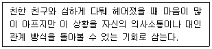
- 개인화
- 사고중지
- 의미축소
- 재구성
(정답률: 56%)
78. 다음 뇌 관련 장애들은 공통적으로 어떤 질환과 관련이 있는가?
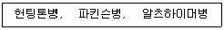
- 종양
- 뇌혈관 사고
- 퇴행성 질환
- 만성 알코올 남용
(정답률: 55%)
79. 성격평가질문지에서 척도명과 척도군의 연결이 틀린 것은?
- 저빈도척도(INF) : 타당도척도
- 지배성척도(DOM) : 대인관계척도
- 자살관념척도(SUI) : 치료고려척도
- 공격성척도(AGG) : 임상척도
(정답률: 36%)
80. 알코올중독 환자에게 술을 마시면 구토를 유발하는 약을 투약하여 치료하는 기법은?
- 행동조성
- 혐오치료
- 자기표현훈련
- 이완훈련
(정답률: 63%)
5과목: 심리상담
81. 청소년 비행의 원인을 현대사회의 가치관 혼란현상으로 설명하는 것은?
- 아노미이론
- 사회통제이론
- 하위문화이론
- 사고충돌이론
(정답률: 51%)
82. 상담자가 내담자에 대한 치료를 중단 또는 종결할 수 있는 경우에 해당하지 않는 것은?
- 내담자가 제3자의 위협을 받는 등 중대한 사유가 있는 경우
- 내담자가 치료과정에 불성실하게 임하는 경우
- 내담자에 대한 계속적인 서비스가 도움이 되지 않을 경우
- 내담자가 더 이상 심리학적 서비스를 필요로 하지 않는 경우
(정답률: 51%)
83. 정신분석에서 내담자가 지속적이고 반복적인 학습을 통해 자신이 이해하고 통찰한 바를 충분히 소화하는 과정은?
- 자기화
- 훈습
- 완전학습
- 통찰의 소화
(정답률: 53%)
84. 항갈망제에 해당하는 것을 모두 고른 것은?
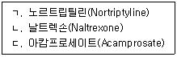
- ㄱ
- ㄱ, ㄴ
- ㄴ, ㄷ
- ㄱ, ㄴ, ㄷ
(정답률: 31%)
85. Beck의 인지적 왜곡 중 개인화에 대한 예로 적절한 것은?
- “관계가 끝나버린 건 모두 내 잘못이야.”
- “이 직업을 구하지 못하면, 다시는 일하지 못할거야.”
- “나는 정말 멍청해.”
- “너무 불안하니까, 고속도로를 달리는 것은 위험할거야.”
(정답률: 63%)
86. Gottfredson의 직업포부 발달이론에서 직업과 관련된 개인발달의 단계에 해당하지 않는 것은?
- 힘과 크기 지향성
- 성역할 지향성
- 개인선호 지향성
- 내적 고유한 자아 지향성
(정답률: 28%)
87. 내담자에게 바람직한 목표행동을 설정해두고, 그 행동에 근접하는 행동을 보일 때 단계적으로 차별강화를 주어 바람직한 행동에 접근해가도록 만드는 치료기법은?
- 역할연기
- 행동조형(조성)
- 체계적 둔감화
- 재구조화
(정답률: 62%)
88. 임상적인 상황에서 활용되는 최면에 관한 가정과 가장 거리가 먼 것은?
- 최면상태는 자연스러운 것이나 치료자에 의해 형식을 갖춘 최면유도로만 일어날 수 있다.
- 모든 최면은 자기최면이라 할 수 있다.
- 각 개인은 치료와 자기실현에 필요한 자원을 담고 있는 무의식을 소유하고 있다.
- 내담자는 무의식 탐구로 알려진 일련의 과정을 진행시킬 수 있다.
(정답률: 42%)
89. 가족치료의 주된 목표와 가장 거리가 먼 것은?
- 가계의 특징을 파악하고 이를 재구조화한다.
- 가족구성원 간의 잘못된 관계를 바로잡는다.
- 특정 가족구성원의 문제행동을 수정한다.
- 가족구성원 간의 의사소통 유형을 파악하고 의사소통이 잘 되도록 한다.
(정답률: 45%)
90. 다음 사례에서 직면기법에 가장 가까운 반응은 어느 것인가?
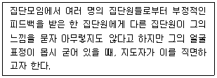
- “○○씨, 지금 느낌이 어떤지 좀 더 말씀하시면 어떨까요?”
- “○○씨, 방금 아무렇지도 않다고 말씀하셨습니다.”
- “○○씨, 이러한 일은 창피함을 느끼게 만드는 것 같습니다.”
- “○○씨, 말씀과는 달리 얼굴이 굳어있고 목소리가 떨리는군요.”
(정답률: 59%)
91. 중학교 교사인 상담자가 학생을 상담하는 과정에서 구조화를 하는 방법으로 틀린 것은?
- 상담자와 내담자는 상담관계 이외에 사제관계를 맺고 있으므로 이런 이중적인 관계로 인해 예상되는 문제나 어려움을 사전에 논의한다.
- 상담에 대해 현실적으로 기대할 수 있는 바가 무엇인지. 기대의 실현을 위해 상담자와 내담자가 각각 해야 할 역할이 무엇인지에 대해 설명한다.
- 정규적인 상담을 할 계획이라면 상담자와 내담자가 만나는 요일이나 시간을 정하고, 한번 만나면 매회 면접시간의 길이와 전체 상담과정의 길이나 횟수에 대해서도 알려준다.
- 상담내용에 대한 비밀보장의 원칙을 내담자에게 알려주고, 비밀보장의 한계에 대한 정보는 내담자의 솔직한 자기개방을 저해할 수 있으므로 상담관계의 신뢰성이 충분히 형성된 이후에 알려주는 것이 좋다.
(정답률: 53%)
92. 청소년기 자살의 위험인자와 가장 거리가 먼 것은?
- 공격적이고 약물남용 병력이 있으며 충동성이 높은 행동장애의 경우
- 성적이 급락하고 식습관 및 수면행동의 변화가 심한 경우
- 습관적으로 부모에 대한 반항이나 저항을 보이는 경우
- 동료나 가족 등 가까운 이들과 떨어져 지내는 회피행동이 증가한 경우
(정답률: 60%)
93. 다음 알코올 중독 내담자에게 적용할만한 동기강화상담의 기법과 가장 거리가 먼 것은?
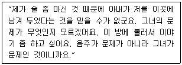
- 반영반응(Reflection Respsnse)
- 주창 대화(Advocacy Talk)
- 재구성하기(Reframing)
- 초점 옮기기(Shifting Focus)
(정답률: 38%)
94. 특성-요인 상담에 관한 설명으로 틀린 것은?
- 상담자 중심의 상담방법이다.
- 사례연구를 상담의 중요한 자료로 삼는다.
- 문제의 객관적 이해보다는 내담자에 대한 정서적 이해에 초점을 둔다.
- 내담자에게 정보를 제공하고 학습기술과 사회적 적응기술을 알려 주는 것을 중요시한다
(정답률: 39%)
95. 학습상담 과정에 대한 설명과 가장 거리가 먼 것은?
- 현실성 있는 상담목표를 설정해서 상담한다.
- 학습문제와 관련된 내담자의 감정을 이해하고 격려한다.
- 내담자의 장점, 자원 등을 학습상담과정에 적절히 활용한다.
- 학습문제와 무관한 개인의 심리적 문제들은 회피하도록 한다
(정답률: 65%)
96. 인간중심상담의 과정을 7단계로 나눌 때, ( )에 들어갈 내용의 순서가 올바른 것은?
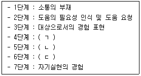
- ㄱ : 지금-여기에서 더 유연한 경험표현
ㄴ : 감정수용과 책임증진
ㄷ : 경험과 인식의 일치 - ㄱ : 감정수용과 책임증진
ㄴ : 경험과 인식의 일치
ㄷ : 지금-여기에서 더 유연한 경험표현 - ㄱ : 경험과 인식의 일치
ㄴ : 지금-여기에서 더 유연한 경험표현
ㄷ : 감정수용과 책임증진 - ㄱ : 감정수용과 책임증진
ㄴ : 지금-여기에서 더 유연한 경험표현
ㄷ : 경험과 인식의 일치
(정답률: 31%)
97. 성상담을 할 때 상담자가 가져야 할 시행지침으로 옳은 것은?
- 성과 관련된 개인적 사고는 다루지 않는다.
- 내담자의 죄책감과 수치심은 다루지 않는다.
- 성폭력은 낯선 사람에 의해서만 발생함을 감안한다.
- 성폭력은 성적 자기결정권의 침해임을 감안한다.
(정답률: 60%)
98. 상담 시 내담자에게 관심을 집중시키는 기술과 가장 거리가 먼 것은?
- 개방적인 몸자세를 취한다.
- 내담자를 향해서 편안한 자세로 앉는다.
- 내담자를 지나치게 응시하지 않는다.
- 내담자에게 잘 듣고 있다고 항상 말로 확인해준다.
(정답률: 42%)
99. 다음은 가족상담 기법 중 무엇에 관한 설명인가?
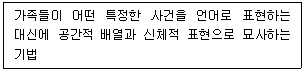
- 재구조화
- 순환질문
- 탈삼각화
- 가족조각
(정답률: 54%)
100. 심리치료의 발전사에 관한 설명으로 옳지 않은 것은?
- 인지심리학의 발전과 더불어 개발된 치료방법들은 1960~70년대 행동치료와 접목되면서 인지행동치료로 발전하였다.
- 로저스(Rogers)는 정신분석치료의 대안으로 인간중심치료를 제시하면서 자신의 치료활동을 카운슬링(Counseling)으로 지칭하였다.
- 윌버(Wilber)는 자아초월 심리학의 이론체계를 발전시켰으며 그의 이론에 근거한 통합적 심리치료를 제시하였다.
- 제임스(James)는 펜실베니아 대학교에 최초의 심리클리닉을 설립하여 학습장애와 행동장애 아동을 대상으로 치료활동을 시작하였다.
(정답률: 43%)